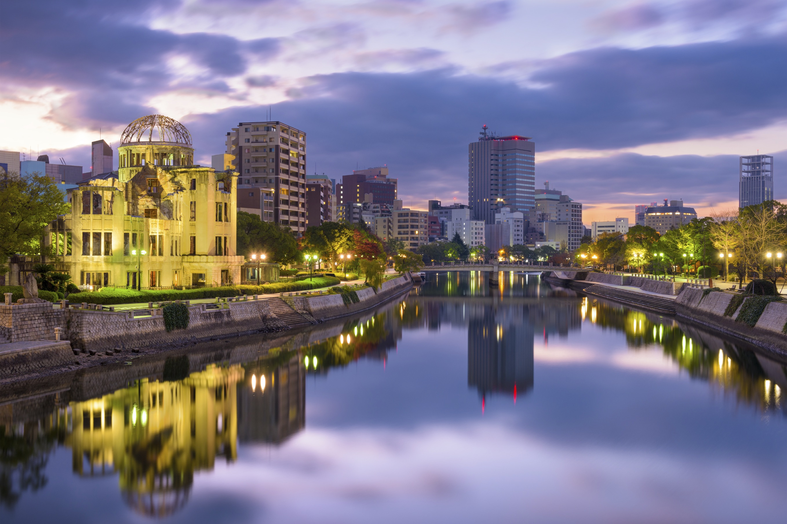

Famous Tourist Places in Japan
Tokyo - Essence Of Japan
The popular city of Tokyo still deserves the top spot in your itinerary, thanks to its anime culture and world-class attractions.

Kyoto - Sacred And Serene
The city of shrines, gardens & palaces! Of all the major Japan destinations, the sacred city of Kyoto is one of the best places to visit in Japan in spring.

Osaka - A Cultural Delight
With the best shopping arcades, eateries that offer incredible food, and the top nightlife hotspots in the city, Osaka is one of the major places to go in Japan.

Yokohama - Charming And Vibrant
Yokohama is famous for its bustling port, Landmark Tower, Chinatown, Minato Mirai 21 waterfront district, Cupnoodles Museum, Sankeien Garden, Yokohama Museum of Art, Red Brick Warehouse, and the Ramen Museum

Hiroshima - Historically Significant City
Hiroshima is famous for its Peace Memorial Park and Atomic Bomb Dome, which are dedicated to commemorating the victims of the atomic bombing in 1945 and promoting peace.
